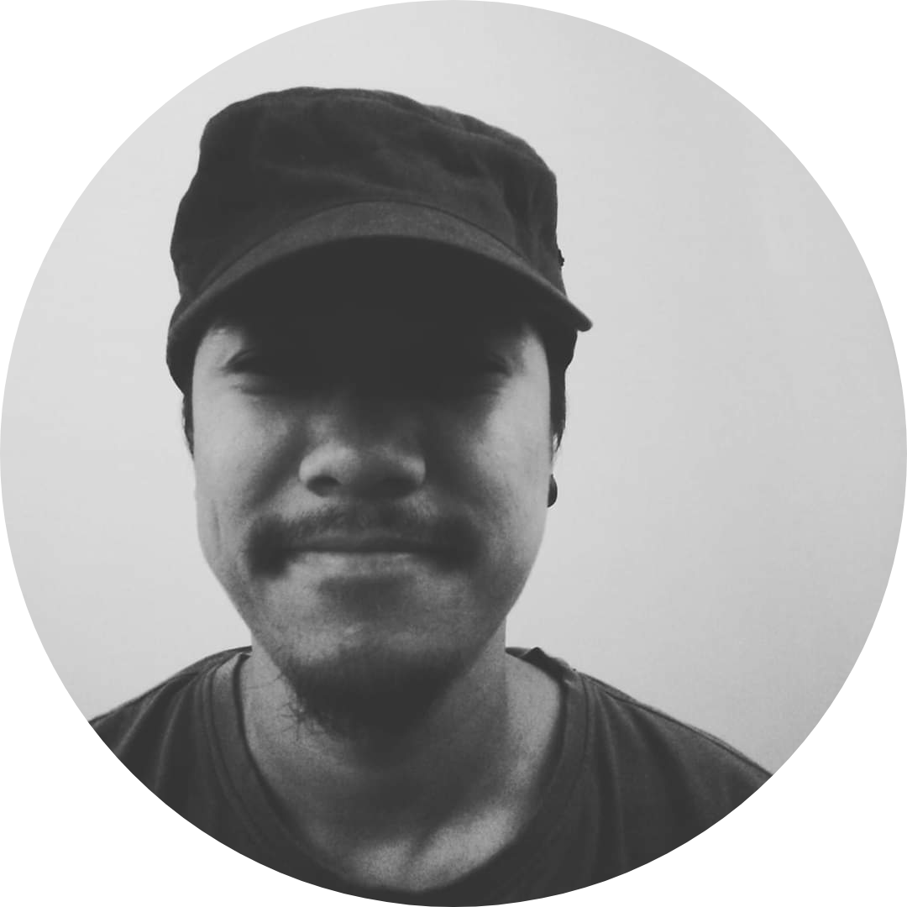

|  |
GUNZAN PRADHAN AUDIO ENGINEER Motivated audio engineer with proper recording, editing and mixing experience. Effective communication and team player with exceptional organizational, project and time management abilities. Skilled at using latest Audio technology. |
| Softwares | Skills |
|---|---|
| AVID Protools 12 | ⭐️⭐️⭐️⭐️⭐️ |
| Logic pro X | ⭐️⭐️⭐️⭐️⭐️ |
| Dante Audio | ⭐️⭐️⭐️⭐️ |
| Microsoft Excel | ⭐️⭐️⭐️ |
| Microsoft Word | ⭐️⭐️⭐️⭐️ |
| Microsoft Powerpoint | ⭐️⭐️⭐️⭐️ |